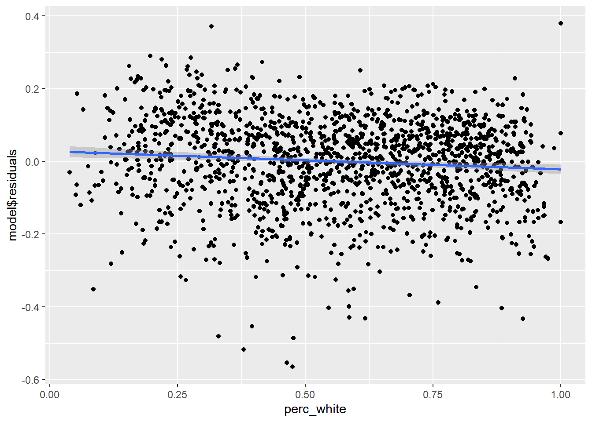

5.2 Multiple regression
In principle, multiple regression merely adds additional independent variables to the same math we’ve done before, but since this causes the model to no longer be viewable in a two-dimensional scatter plot, it feels more substantively different than it should. If you boil down the difference to additional mx terms in y = mx + b, then this jump in dimensionality should feel much more manageable. Let’s go ahead and expand on the analyses we did of education and income at the census tract level. Let’s add one possibly explanatory variable: % of households that are White (-led).
library(tidyverse)
library(censusapi)
library(sf)
library(mapview)
library(tigris)
Sys.setenv(CENSUS_KEY="c8aa67e4086b4b5ce3a8717f59faa9a28f611dab")
acs_vars_2019_5yr <-
listCensusMetadata(
name = "2019/acs/acs5",
type = "variables"
)bay_multiple_tract <-
getCensus(
name = "acs/acs5",
vintage = 2019,
region = "tract:*",
regionin = "state:06+county:001,013,041,055,075,081,085,095,097",
vars = c(
"B06009_001E",
"B06009_002E",
"B06009_003E",
"B19001_001E",
"B19001_014E",
"B19001_015E",
"B19001_016E",
"B19001_017E",
"B19001A_001E"
)
) %>%
transmute(
tract = paste0(state, county, tract),
perc_college = 1 - (B06009_002E + B06009_003E) / B06009_001E,
perc_over100k = (B19001_014E + B19001_015E + B19001_016E + B19001_017E) / B19001_001E,
perc_white = B19001A_001E / B19001_001E
) %>%
filter(
!is.na(perc_college),
!is.na(perc_over100k),
!is.na(perc_white)
)So at this point, the modified question could be: to what degree does information about BOTH race and educational attainment in a neighborhood tell us something about income? This can no longer be viewed on one scatter plot. One useful visualization tool that becomes useful once we are dealing with multiple variables is a correlation plot, which can be done in Excel, and in R is available through a number of packages, like corrplot (remember to install with install.packages("corrplot") if using for the first time):
library(corrplot)
correlationplot <- bay_multiple_tract %>%
select(
perc_white,
perc_college,
perc_over100k
) %>%
cor()
corrplot(
correlationplot,
method = "number",
type = "upper"
)There are many possible parameters to customize the visualization, but what I’ve shown above is the essential information. Note that the numbers are correlation coefficients, which are R-squared without the square, which you’ll recall from earlier this chapter is a measure of the amount of variance one variable shares with the other. The “1” values are self-evident as you are pairing a variable with itself. So the only other numbers are the results of the unique possible pairings. At this scale, we are treating any of these pairs as valid to evaluate, and agnostic about what we might ultimately treat as the “independent” vs. “dependent” variables (which is great to keep in mind as completely arbitrary, since we can make no claims of causality here). All of these numbers are positive, which is to say that increases in any one variable are associated with increases in the others (this was also an arbitrary consequence of the specific variables we designed; if we had switched perc_white with perc_nonwhite, we’d see some negative, red numbers in this plot). The correlation coefficient between perc_college and perc_over100k is 0.73; if we take the square of this, we get 0.53, which matches the R-squared from the first lm() output in the previous chapter. Note that the correlation coefficient between perc_white and perc_college, and perc_white and perc_over100k, are lower, which means we’d expect the scatter plots between these two pairs to have a looser fit around the regression line:
ggplot(
data = bay_multiple_tract,
aes(
x = perc_white,
y = perc_college
)
) +
geom_point() +
geom_smooth(method = "lm")
##
## Call:
## lm(formula = perc_college ~ perc_white, data = bay_multiple_tract)
##
## Residuals:
## Min 1Q Median 3Q Max
## -0.48905 -0.10068 0.01654 0.10835 0.34437
##
## Coefficients:
## Estimate Std. Error t value Pr(>|t|)
## (Intercept) 0.521428 0.009783 53.30 <2e-16 ***
## perc_white 0.366615 0.016006 22.91 <2e-16 ***
## ---
## Signif. codes: 0 '***' 0.001 '**' 0.01 '*' 0.05 '.' 0.1 ' ' 1
##
## Residual standard error: 0.1438 on 1575 degrees of freedom
## Multiple R-squared: 0.2499, Adjusted R-squared: 0.2494
## F-statistic: 524.6 on 1 and 1575 DF, p-value: < 2.2e-16ggplot(
data = bay_multiple_tract,
aes(
x = perc_white,
y = perc_over100k
)
) +
geom_point() +
geom_smooth(method = "lm")
##
## Call:
## lm(formula = perc_over100k ~ perc_white, data = bay_multiple_tract)
##
## Residuals:
## Min 1Q Median 3Q Max
## -0.51235 -0.13376 0.01303 0.12491 0.47003
##
## Coefficients:
## Estimate Std. Error t value Pr(>|t|)
## (Intercept) 0.37999 0.01164 32.64 <2e-16 ***
## perc_white 0.24022 0.01905 12.61 <2e-16 ***
## ---
## Signif. codes: 0 '***' 0.001 '**' 0.01 '*' 0.05 '.' 0.1 ' ' 1
##
## Residual standard error: 0.1712 on 1575 degrees of freedom
## Multiple R-squared: 0.09171, Adjusted R-squared: 0.09113
## F-statistic: 159 on 1 and 1575 DF, p-value: < 2.2e-16Keep in mind that the slope of the line (what we might call the “effect size”) is a distinct concept from R-squared which is a measure of correlation. These don’t have to do anything with each other. What a high correlation coefficient and R-squared value tell you is that residual errors are low; what a steep slope tells you is that large changes in x are associated with large changes in y. In this case, education seems to have better predictive power (on income) compared to race, and it also predicts larger changes (in income) compared to race.
For ease of comparison with what follows, I’ll reproduce the scatter plot and lm() output for the original pairing of perc_college and perc_over100k from the previous chapter, so we have all three unique combinations of pairs:
ggplot(
data = bay_multiple_tract,
aes(
x = perc_college,
y = perc_over100k
)
) +
geom_point() +
geom_smooth(method = "lm")##
## Call:
## lm(formula = perc_over100k ~ perc_college, data = bay_multiple_tract)
##
## Residuals:
## Min 1Q Median 3Q Max
## -0.56483 -0.07131 0.01394 0.08257 0.37896
##
## Coefficients:
## Estimate Std. Error t value Pr(>|t|)
## (Intercept) -0.05996 0.01393 -4.305 1.77e-05 ***
## perc_college 0.78996 0.01862 42.435 < 2e-16 ***
## ---
## Signif. codes: 0 '***' 0.001 '**' 0.01 '*' 0.05 '.' 0.1 ' ' 1
##
## Residual standard error: 0.1227 on 1575 degrees of freedom
## Multiple R-squared: 0.5334, Adjusted R-squared: 0.5331
## F-statistic: 1801 on 1 and 1575 DF, p-value: < 2.2e-16Now let’s see the results of lm() with both race and education used as independent variables. All this entails is linking the two variables together with + on the right side of ~:
##
## Call:
## lm(formula = perc_over100k ~ perc_college + perc_white, data = bay_multiple_tract)
##
## Residuals:
## Min 1Q Median 3Q Max
## -0.58219 -0.06857 0.01426 0.08389 0.40147
##
## Coefficients:
## Estimate Std. Error t value Pr(>|t|)
## (Intercept) -0.05532 0.01390 -3.980 7.21e-05 ***
## perc_college 0.83483 0.02138 39.045 < 2e-16 ***
## perc_white -0.06584 0.01568 -4.198 2.84e-05 ***
## ---
## Signif. codes: 0 '***' 0.001 '**' 0.01 '*' 0.05 '.' 0.1 ' ' 1
##
## Residual standard error: 0.122 on 1574 degrees of freedom
## Multiple R-squared: 0.5386, Adjusted R-squared: 0.538
## F-statistic: 918.7 on 2 and 1574 DF, p-value: < 2.2e-16Let’s inspect the (potentially surprising) results, in comparison with the previous three lm() outputs.
While the regression coefficient (which we’ve called “slope” previously, but since we can’t visualize this in a two-dimensional chart anymore, it’s better to reframe as just a coefficient you multiply x by) of perc_white was 0.24 when it alone was compared with perc_over100k. But now, alongside perc_over100k, its coefficient has effectively become 0. That is to say that, “controlling for education”, there appears to be a very small association (but still significant, per the asterisks) between race and income. Again, no causal claims here; perhaps there is actually a big causal mechanism here, but some other causal mechanism has an equal and opposite effect. We’re merely making claims about the shared variation in observations, and in this case, multiple observations.
Looking more closely: the regression coefficient for perc_college on its own was 0.79, but actually increased to 0.83 when combined with perc_white. So, we could say that, “controlling for race”, education appears even more associated with income. More specifically, the more white a census tract is, we would predict a (very slightly) lower number of high income households. But that would seem to go against what we saw earlier, where the scatter plot of perc_white vs. perc_over100k showed an overall positive relationship (effect size of 0.24). What’s going on here?
This happens to be a small example of a big issue in statistics, Simpson’s paradox, which refers to situations where this kind of reversal appears to happen: positive association in one framing, negative association in another. What usually explains this paradox is a confounding variable, in this case education, such that within subgroups of education, White-ness has a muted, even negative association with income. To start to get a sense of this possible explanation, we can add one more “dimension” of color to a previous scatter plot perc_white vs. perc_over100k, so that “higher education” census tracts are lighter color than “lower education” census tracts.
ggplot(
data = bay_multiple_tract,
aes(
x = perc_white,
y = perc_over100k
)
) +
geom_point(
aes(
color = perc_college
)
)
We can roughly see that the colors are not completely randomly mixed; lighter colors tend to be to the upper right of the scatter plot. To visualize this even more clearly, we can directly break this scatter plot into a few smaller scatter plots with different amounts of education, each with their own trendlines. To help us do this, we are going to use a function called quantcut(), which lets you convert a vector of continuous data into a discrete number of factor categories; just think of this as a shortcut to using case_when() to manually assign perc_college values in different tiers to string descriptions of the tiers. quantcut() comes from a package called gtools, so make sure to install and load that.
library(gtools)
bay_multiple_tract %>%
mutate(
college_round = quantcut(perc_college, 4)
) %>%
ggplot() +
geom_point(
aes(
x = perc_white,
y = perc_over100k,
color = college_round
)
) +
geom_smooth(
aes(
x = perc_white,
y = perc_over100k,
color = college_round
),
method = "lm",
se = F
) +
geom_smooth(
aes(
x = perc_white,
y = perc_over100k
),
method = "lm",
se = F,
color = "black",
linetype = 2
)The dashed black line is the original best-fit line we’ve seen before, but in addition, we’ve separated the data into quartiles of education (i.e., red is the lowest 25% of census tracts by perc_college, and purple is the highest 25%), each with separate best-fit lines. While the best-fit line for the lowest educational attainment census tracts still appears to be positive slope (i.e., more White-ness predicts more income), for the rest of the census tracts, White-ness has a slightly negative association with income.
Here’s one more way to better visualize this confounding relationship. If we have run lm() on perc_college vs. perc_over100k, then, recall from the the previous chapter, residuals(model) holds all the “residuals”, or “remaining unexplained variation in perc_over100k after perc_college has been accounted for”. So if we were to plot perc_white vs. these residuals, we’d see the following:
model <- lm(perc_over100k ~ perc_college, bay_multiple_tract)
ggplot(
data = bay_multiple_tract,
aes(
x = perc_white,
y = model$residuals
)
) +
geom_point() +
geom_smooth(method = "lm")
This is not exactly the same negative regression coefficient for perc_white as what we see in the multiple regression results, but tells the same story: once the explanatory power of education has been accounted for, the census tracts where education tends to “underestimate” income (i.e., the residuals are positive) tend to have fewer White-led households (top and left in the plot), while the census tracts where education tends to “overestimate” income (i.e., the residuals are negative) tend have more White-led households.
Notice how this more nuanced interaction between race and education was “invisible” to us before we started to dig deeper into multiple regression, which goes to show how complex statistical analysis can be. I would recommend you always carefully consider the possibility of lurking variables, using a combination of this visual scatter plot technique and the results of the multiple regression itself.
Returning to our examination of the results of the multiple regression: R-squared for perc_white vs. perc_over100k was 0.092, and R-squared for perc_collegedegree vs. perc_over100k was 0.533. R-squared for both independent variables combined was 0.539, only slightly higher. You can ONLY maintain or increase R-squared (which is to say, reduce residuals) when adding new variables, because at its worst, a new independent variable can simply have a regression coefficient of 0 and have no effect size. Essentially, perc_white has been demoted to almost this status, which is to say that whatever explanatory power race had is virtually entirely coinciding with the explanatory power of education (an analogy would be that a sundial tells time, and a wristwatch tells time better, and if you have both, a sundial is virtually useless). The other clue we had of this result was the other correlation coefficient from the correlation plot, which was 0.50 between the two independent variables. If your independent variables are correlated, then they’ll share some amount of explanatory power (which is why R-squared is usually less than the sum of its R-squared parts).
This kind of evaluation is worth doing on any combination of independent variables. You might wonder: if I can just keep adding independent variables and get higher and higher R-squared, why don’t I just use every single possible variable I can get from the ACS? And you would have re-invented machine learning, which does essentially that (often described as “throwing everything in the kitchen sink”). The benefit is predictive capability (i.e. reduction of residual errors), but the cost is interpretability of the regression coefficients (“slopes”) of individual variables, which can go haywire from a mathematical perspective if you include too many similar variables. One last useful check to do on your multiple regression models is the variance inflation factor (VIF), which is a formal mathematical measure of how much variables in your set of multiple variables may be collinear (highly correlated) with each other (which can cause the shared size of their explanatory power to look distorted in your results). We can use vif() from the car package:
## perc_college perc_white
## 1.333099 1.333099A VIF value of 1 indicates no collinearity; VIF values above 5 suggest a level of collinearity that has a problematic influence on model interpretation (James et al. 2013), in which case you should generally remove the variable with this highest VIF value and re-run your model.
Ultimately, for non-machine-learning applications, where you want the story of the regression analysis to be meaningful to stakeholders: the goal should be to have just a handful of independent variables, each as uncorrelated with each other as possible, which is to say they likely represent distinct dimensions of characteristics about a population that all seem to “explain” something about the outcome. As you add each additional independent variable to the multiple regression, look for non-negligible change in R-squared; if there is no change, that variable is highly correlated with existing variables and/or has no explanatory power, and therefore is probably not worth adding. There are advanced techniques (like “stepwise regression”) you can pick up to help with the search process for good independent variables, but often intuition and literature review are your best tools.